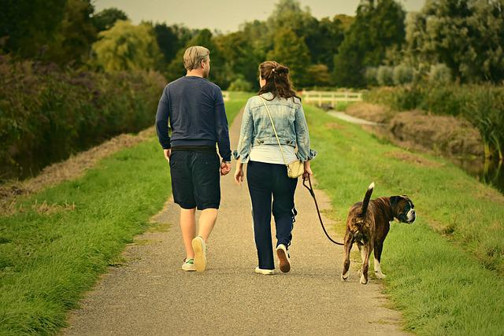
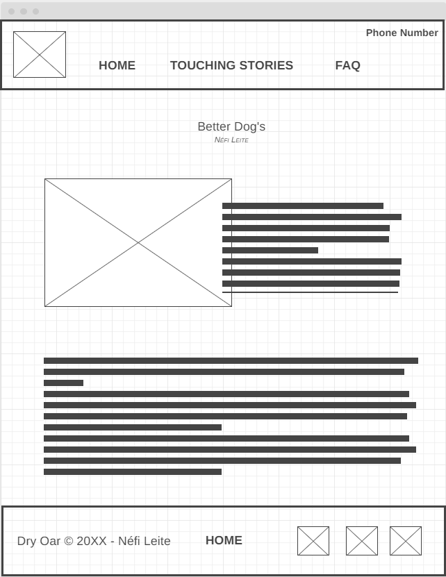
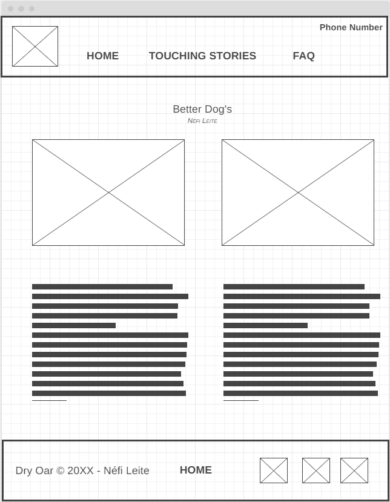
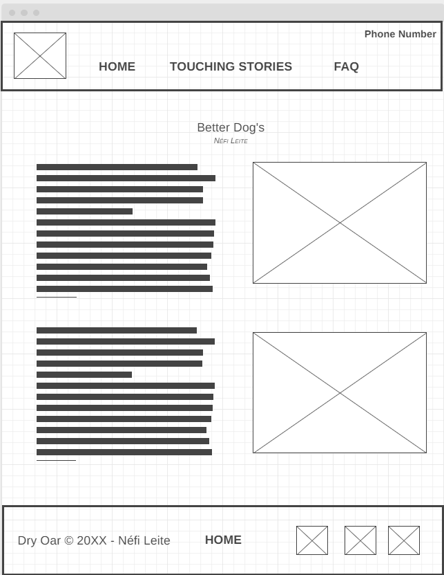

Overview
Purpose
"The dog is that type of animal more clothed in the soul than in fur." It is amazing to know that four little legs are capable of demonstrating the power of the verb to love. On this website, you will find a friend who will love you more than himself. Through the compelling stories, you will be able to save animal lives. We will answer all your questions, from how to train and care to the best prices on medications, products, and accessories for your dog. Therefore, transform your day and adopt your dog friend!
Audience
Adopting a dog is an act of love. After all, welcoming a puppy will bring love to both his life, which will gain a family and his life, which will have the affection and company of an eternally grateful animal. Having a pet is having a great friend to accompany you on all adventures - and in sad moments too. Remember you need to take action to enjoy the benefits of having a pet, so ready to meet your best friend today?
Branding
Website Logo
.png)
Style Guide
Color Palette
Palette URL: https://coolors.co/14d7f5-3546fc-8a73ff-3814b8| Primary | Secondary | Accent 1 | Accent 2 |
|---|---|---|---|
| [14d7f5] | [3546fc] | [8a73ff] | [3814b8] |
Typography
Heading Font: Noto Serif
Paragraph Font: Roboto Slab
Normal paragraph example
George Eliot once said, "Animals are very pleasant friends - they don't ask questions, they don't criticize." In addition to the ability to create attachment and an emotional connection with humans and other animals, the intelligence of dogs is something that is also extremely widespread and exploited, transforming dogs into true superheroes in the eyes of the physically and intellectually disabled – who can benefit greatly from the help of a four-legged friend to gain more independence and even motivation.
Colored paragraph example
Life is more than just waiting, your best friend awaits you here to experience your greatest adventures.
Navigation
Site Map
Content
Home page
George Eliot once said, "Animals are very pleasant friends - they don't ask questions, they don't criticize." In addition to the ability to create attachment and an emotional connection with humans and other animals, the intelligence of dogs is something that is also extremely widespread and exploited, transforming dogs into true superheroes in the eyes of the physically and intellectually disabled – who can benefit greatly from the help of a four-legged friend to gain more independence and even motivation.
Images for the Home page

Touching Stories
Everything we've lived together in recent years is based on love, dedication, respect, and trust. People always say “Your connection is amazing” YES and this is only possible because, in addition to shurastey being my companion dog, he is my life partner, he is always with me in everything I do but especially in the places where I somehow he'll feel good. My well-being in taking you with me to all the roles has to be equivalent to your well-being of being in this place. Today we visited @summitov and it was an amazing experience, and shurastey was the first dog to go there, but the most amazing thing is realizing that you were fine walking on a glass walkway at a height of over 400 meters and all that because you were feeling safe because you were with me by your side!
Images for the Page 2


FAQ
When we are going to adopt a dog, we often simply think about how to feed it, and keep it clean and safe. But the truth is that a dog needs much more than that. After all, he is much more than a simple animal that needs to survive in the middle of a dense and dangerous forest. He is an animal that needs a home, a family, and lots of love. This need exists and you need to fill it. We'll teach you how to do it!
Images for the Page 3


Wireframes
Create three wireframes for your site. One for each page and list them here
Home
[Any additional details about home that the wireframe does not make clear]
[Page 2]
[Any additional details about page 2 that the wireframe does not make clear]
[Page 3]
[Any additional details about page 3 that the wireframe does not make clear]
